This Super Simple "Soup Ritual" Melted 69 Pounds of Nagging Fat After My Humiliating Honeymoon
Discover How Women & Men Over 50 Are Melting Belly Fat Like Crazy With a Simple Daily Ritual That:
- Burns Abdominal Fat 240% Faster
- Lose 1 Jean Size In a Single Week
- Kills Hunger & the Most Intense Cravings Without Cutting Calories
- Drastically Improves Blood Pressure & Blood Sugars in Just One Week
- Lose Up To 4 Sizes in Just 4 Weeks While Eliminating Achiness & Fatigue
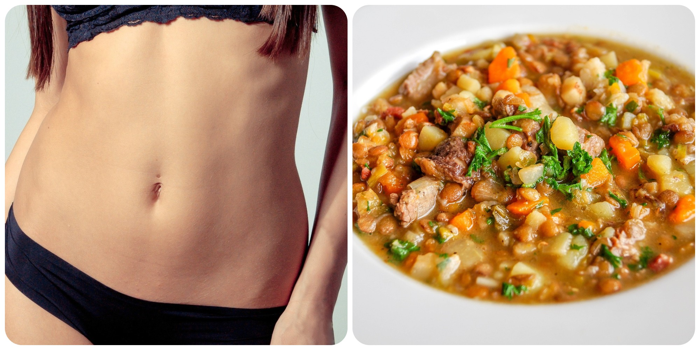
Give This Waist-Slimming Secret 48 Hours Then Weigh Yourself in the Morning
Women and men over 50 are buzzing about a new wave of weight-loss soups so powerful they take off up to 14 pounds every 14 days...
And a jean size in a single week.
Why do they work so well?
It's a combination of the right ingredients that kill hunger...
Along with using the latest science to pack this convenient comfort food with nutrients that make belly fat melt faster.
Nutrients that most women and men over 50 aren't getting nearly enough of.
Penn State University researchers found that the combination of solid foods in liquid tricks the body into feeling full about 400 calories sooner than normal.
If you do the math, that means you would lose about 41 pounds of extra weight this year without strict dieting or exercise.
Think of it like Mother Nature's appetite suppressant.
Just imagine how your body would look, move and feel being 50 pounds lighter without you doing any real "work".
However, I must warn you...
Not all soup, or soup diets, are created equal.
In fact, most don't work because they focus on restricting calories or use the wrong ingredients, which triggers cravings and can lead to weight gain.
And most soups aren't spiked with key nutrients that optimize fat-burning in the body after 50...
...when your hormones are drastically different than they were just a few years ago.
Jessica, a 53-Year-Old Mom From Virginia Was Looking for Relief From Her Constant Achiness and Fatigue
And she thought eating these new soups would be easiest because of her busy lifestyle.
When she craved comfort food, she had a bowl of soup.
Within days, pounds starting pouring off, motivating Jessica even more.
In the end, she went down from a size 18 to a size 10 without making any other changes to her diet.
Just remember, you can't eat any old soup to get these kind of jaw-dropping results.
Just Follow This Daily Ritual and Watch As Fat Melts Off Your Body
If nothing has ever worked for you before...
Maybe you've tried keto and low-carb diets...
Or Weight Watchers...
Or maybe you've tried skipping meals and cutting way back on calories...
Or eating nothing but protein and veggies...
If none of those ever work for you, then you're in luck...
Because if you can take a spoonful of soup, lift it up to your mouth, swallow it, and then repeat until you're full...
Then this will work for you.
It's that simple.
There's no way you can fail unless you hate soup.
And no, I'm not talking about canned soup you buy at the grocery store that's filled with added chemicals, processed foods, and nasty ingredients.
Or certain homemade soups that use ingredients that trigger fat storage in adults over 50...
These are different.
Even better, the weight loss is so easy to maintain because you can still have dessert (like a big piece of chocolate cake after your soup)...
And the weight will still come off.
And Here's the Real Secret...
These slimming soups have a built-in appetite suppressant...
Thanks to a handful of little-known "super-nutrients" that help kill cravings, eliminate mindless snacking, and all-but end emotional eating.
That's the real reason why this works so well...
Because if you're hungry all the time, no matter how healthy you're eating, it's just not going to work.
You know yourself better than anyone, and when's the last time being constantly hungry led to any substantial weight loss?
The Soup Plan For a Tiny Waist
Hi, my name is Josh
I have an unusual true story to share about how I saved my own life
...and lost over 100 pounds eating soup.
So if you're wondering whether you can burn belly fat every week by simply eating more soup
The answer is yes.
But it's not what you think.
These aren't soups from a can or a restaurant.
Yet you can make them right at home with just a handful of ingredients.
When I started sharing my recipes online, people from all over the world started slimming down
Like Wendy, a 68-Year Old Grandmother Who Lost 12.2 Pounds In Just 7 Days
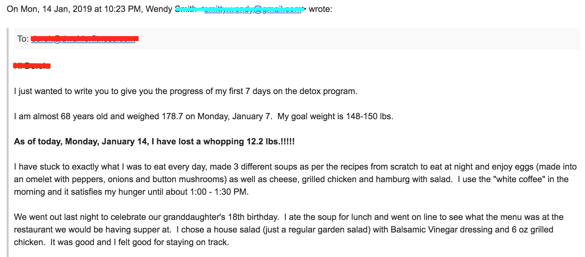
And Dr. Qureshi Lost 13.2 Pounds In Just 4 Weeks
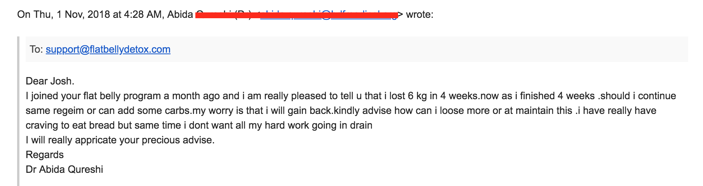
Yet The Secret to These Naturally Slimming Soups Is...
They contain a handful of herbs, spices, and minerals that trigger fat-burning, especially around your stomach area.
Don't worry, I'll give you the entire list in just a minute and explain WHY each one works in detail.
That way you can use them at home as soon as tonight.
But the real reason they work is because they unclog an overworked detox system in the body that affects 80% of women over 40.
This detox system is a complex network of capillaries and vessels that help the body flush out fat..
And when it's backed up, it leads to fat piling up on the body.
So it's not about eating fewer calories
Or skipping meals
Or eating less
None of those matter if your internal detox system is slow, sluggish, sludgy.
So today, we're going to fix it.
Frustrated Dieters Are Starting to Realize This Is the Missing Link
What I'm going to share with you today has been overlooked by the top doctors, experts, and dietitians for years.
That's because they're all so busy, they don't have the time to research how the body changes as you get older.
However, researchers from Stanford University discovered that this slowdown causes fat storage to double in women
And it triggers the creation of more fat cells that expand your waistline and make your belly bigger
Which makes losing weight on ANY diet virtually impossible.
So if you've been dieting for years and the pounds never come off
Or maybe you've tried everything and since nothing ever works, you give up because what's the point?
Or maybe your mom was overweight and you think you're doomed to the same fate
Well, today were going to change that.
Before I Go Any Further, Let Me Warn You
What I'm going to share today flies in the face of traditional medicine and human anatomy
It's not about eating more vegetables
Or exercising more
Or going on a crash diet...
Unfortunately, we have gotten in wrong for years.
And both you and I have been the ones to suffer
With growing waistlines, dangerous belly fat, and cellulite in all the wrong places.
That's why I'm writing to you today.
Because through my own frustrating journey, where I ballooned up to over 300 pounds, I stumbled upon a real-life working miracle that took over 100 pounds off my body
And literally saved my life.
It left my doctor scratching his head
And my wife ecstatic that we get to spend the rest of our lives together.
There are plenty of people who want me to keep my mouth shut
Because if I tell you how easy this is, then millions of dollars could be lost by big companies who prey on the sick
However, if you haven't been feeling like yourself lately
Then what I have for you here today can be life-changing.
First, let me tell you exactly who I am
And how I stumbled across this weight loss breakthrough.
As I Mentioned Before, My Name Is Josh
I'm not a doctor
I'm not a dietician
And I'm not a personal trainer.
I'm just a normal guy from Georgia who married his high-school sweetheart when she was the only friend I ever had.
And after our wedding, where I banned all the photographers because I didn't want any pictures taken of me
I Stumbled Across a Simple Daily Ritual That Saved My Own Life
However, first I want to share something with you that I haven't told ANYONE
Not my friends, not my parents, and not even my wife of over 15 years
So here's the honest truth
It sucks being fat.
And I should know
Up until a few years ago, I spent almost my entire life overweight.
And as hard as it is for me to talk about, I know my story might help you when NO ONE else understands what you're going through
So here's the quick story
Since I was a kid, I've struggled with my weight.
All the way back to elementary school, kids would make fun of me, call me names, and bully me constantly.
No One Would Sit With Me on the School Bus
As I walked down the bus aisle looking for a seat, I could already hear the other kids laughing at me.
Look at the pig
Hey fat butt
Hope you eat the teachers so we get out of class earlier
And of course, no one would let me sit by them.
The verbal abuse was just so hard.
I wanted to cry
Yet deep down I knew that would only make things worse.
And even though this was by far the WORST time in my life, where I was so miserable I didnât even want to go out in public or even stand in front of mirror in the morningâ¦
It was also the start of my journey.
Time passed and things didn't get any easier
I was depressed
Never wanted to get out of bed in the morning
And I Quickly Grew to Hate My Own Life
I still remember one day at lunch during high school
I was looking for a table when one of the popular kids walked by, bumped into me on purpose, then shoved me to the ground.
I fell flat on my face.
Food went flying everywhere, all over my clothes
And all I could do was pick up my tray and keep walking to my table.
I was so embarrassed, yet as sad as it is to say
That was just the beginning.
A Humiliating Honeymoon Photo Led Me To Discover a Daily Ritual That Melted Over 100 Pounds
A few years later, I ended up marrying my high-school sweetheart.
We went to Nashville for our honeymoon...
And one day we went to a bird park.
As we were exploring all these rare and exotic birds, our tour guide asked if I wanted a picture taken.
I said sure and didn't think much of it. However...
When we finished the tour and got our pictures, I was SHOCKED
I looked HUGE!
It hit me like a ton of bricks because I wasn't just a little overweight
I was easily over 300 pounds!
We went back to the cabin, and I asked my wife if I had really put on that much weight
And she said, Well, yeah but I love you regardless so it doesn't really matter to me.
That photo turned my world upside down
All of a sudden, the same feelings and emotions from high school came rushing back
Those feelings of being alone
Depressed
Miserable
Unloved
It only took one picture to bring all of those horrible feelings back.
I was in denial
And it took me days to accept the fact that I was still that same person who got picked on every day back in school.
That's When I Hit My Breaking Point
I just didn't feel like myself anymore.
I was tired all the time...
I could barely get going in the morning...
And then I couldn't fall asleep at night.
I felt so rundown that I didn't even have the energy to go on a walk with my wife after dinner...
Or take our dog to the dog park.
My weight was higher than it had ever been before.
And it led to a host of other conditions like...
High Blood Pressure
Type 2 Diabetes
Hypertension
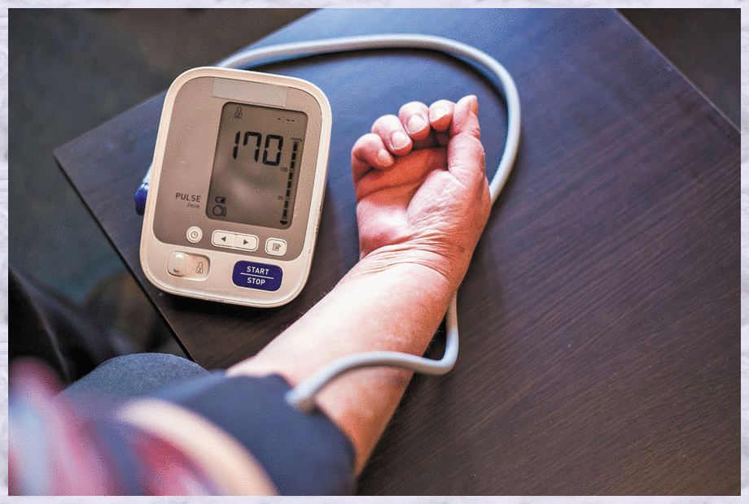
High Cholesterol
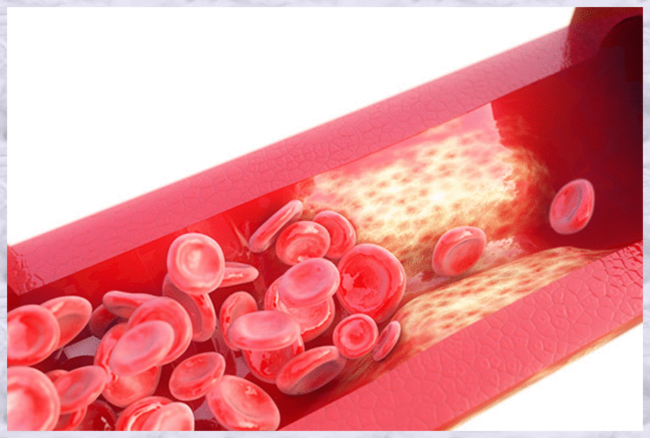
Stanford University Nicknamed This Fat-Storing Nightmare "Lymphatic Slowdown"
If you spent the last few months eating healthier without losing a single pound...
Or maybe your rings fit tight, your knees feel a little creaky, and your body feels more tired than usual...
These signs all point to a congested lymphatic system.
Your lymphatic system is a network of capillaries and vessels that help the body get rid of toxins, excess fluids and fat.
However, the lymph can easily be overloaded with chemicals, pesticides from fruits and veggies, and a variety of other pollutants lurking in the air we breathe.
Plus, everyday stress is also shuts down the lymph.
When this system gets slowed down and congested...
It can sabotage your weight loss efforts.
An Estimated 80% of Women Over 50 Have a Congested Lymphatic System That Dumps Fat Around Your Belly, Hips & Thighs
"When the lymph flow is slow and congested, it leads to an accumulation of body fat", says Bruno Chikly, M.D., director of the Lymph Drainage Therapy & Brain Therapy Programs in Scottsdale, Arizona.
Think of your lymphatic system as a highway...
When there's cars lined up in rush hour traffic, other cars can't squeeze in.
The same thing happens with your fat molecules.
"A slow lymphatic system can no longer properly transport fat where it needs to go", Dr. Chikly explains.
This extra fat piles up around your belly, hips, and thighs.
And according to researchers at Stanford University, lymphatic slowdown causes fat storage to double!
This Forces Your Body to "Hold On" To Extra Weight
This was a big breakthrough for me in understanding why my body was always storing fat even if I was on a diet.
According to lymph expert Jenna Macciochi, Ph.D., "Carrying around extra pounds triggers inflammation - a problem for both your immune system and your waistline."
"As part of its role as a superhighway, the lymphatic system carries immune cells through your body to infection-fighting lymph nodes.
However, inflammation thwarts this process by reducing lymph flow."
And researchers at St. Jude Children's Research Hospital report that this inflammation triggers the creation of more fat cells to store these toxins in...
Which makes losing weight even more difficult.
When you have slow lymph flow in your body, as most women do, it forces your cells to "hold on" to extra weight...
It's like those old pair of jeans that you never wear...
And yet you can't bring yourself to get rid of them because MAYBE you'll wear them again.
So they sit in your closet, taking up space.
It's the same with fat when your lymph flow is congested.
Your body just won't get rid of it like it should.
And that's how the fat starts piling up in all the wrong places.
Are you starting to notice how your body is stacked up against the 8 ball without you even knowing?
A Congested Lymp System Also Causes Cellulite
If your lymph isn't flowing, your tissues aren't draining excess fluid.
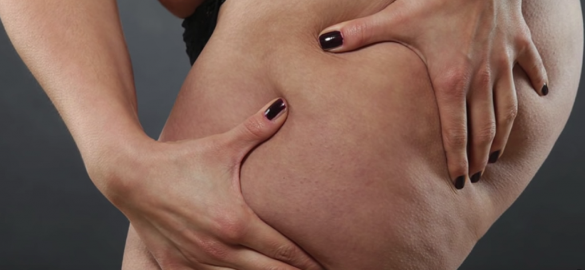
This creates a backlog that results in bloating.
Even worse, this backed-up fluid sticks to fat cells making them bigger.
As your fat cells get bigger, they start to burst through your fascia...
Which is a protective layer of tissue underneath your skin.
When your fat cells start popping through the fascia, it creates a "dimple effect"...
Which leads to cellulite.Â
Combine that with the hormonal changes every woman and man goes through as you get older...
Along with being less active, less mobile, and losing precious lean muscle tissue...
It's easy to see how cellulite can start popping up all over your butt and thighs.
Yet it's not from eating too many calories...
It all starts with your lymph system slowing down, killing your ability to burn fat.
How Do You Know If "Lymphatic Slowdown" Is To Blame?
(Do This 10-Second Self-Test)
Do you eat reasonably healthy without ever losing a single pound?
Are your rings sometimes tight on your fingers?
Are your joints more sore now compared to when you were younger?
Are you often tired even when getting plenty of rest?
These signs all point to a congested lymphatic system.
When your lymph fluid isn't flowing properly, it causes your tissue to swell.
These bloated, inflamed tissues can add up to 15 pounds to your weight and cause you to swell two extra dress sizes.
And it causes your fat-storage to double.
Which is why your stomach may be getting bigger despite eating healthier foods.
Luckily, this NEW "quick fix" is easier than ever.
Especially if you love eating warm meals.
It's one of the safest things you can do to look 10 years younger while getting the extra weight off quickly...
And it's the "missing link" most adults overlook when trying to drop pounds.
This Simple Daily Ritual Thins Out a Clogged Lymph to Flush Away Raw Fat
When you eat more of these specific soups that support your body, it reduces toxin buildup and allows more fluid to be pumped through the body...
Often in as little as 7 days.
Once lymphatic fluid is moving freely, fat can be burned for fuel and excess toxins can be flushed from the body.
Even better, according to Dr. Chikly...
"Greater lymph flow may reduce your risk of plaque buildup in the arteries, high cholesterole, and inflammatory bowel disease."
Just remember, when your lymphatic system isn't working properly, because your lymph fluid is too thick from the wear and tear of aging, fat molecules can't be transported to be burned for fuel.
Instead, they stay stuck to your belly, hips, and waistline...
...causing a buildup of excess pounds.
Tom Fixed His Lymph to Drop 20lbs At the Age of 69 While Nearly Reversing Diabetes
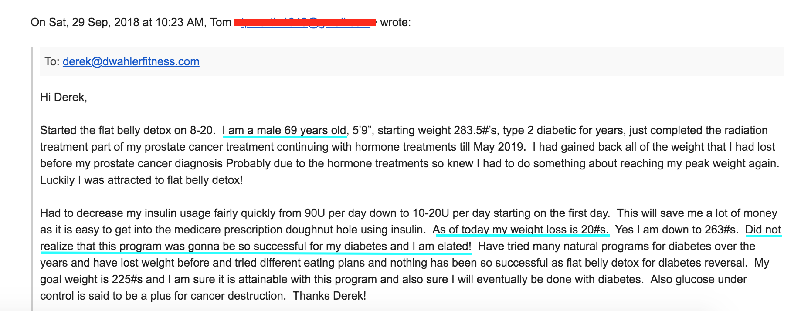
Carolyn Dropped 1 Pound a Day Eating Soup!
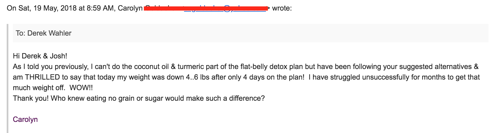
These 3 "Missing Minerals" Thin Out a Clogged Lymph to Power Off Pounds
Now that you know a clogged lymph keeps stubborn pounds on your body...
And the key is thinning out your lymph fluid...
...because when it flows freely, your body can burn fat and flush toxins...
Let's talk about exactly what you should do to get this fixed.
After my doctor dumped all this new information on me...
I started studying cases where people successfully reversed their clogged lymphs and were losing anywhere from 20 to 55 pounds in a matter of months.
And what kept coming up in study after study were these 3 minerals that most adults are lacking.
So my first recommendation would be to start adding foods rich in these minerals right away.
Missing Mineral #1: Potassium
The most important thing you can do to flush out the extra pounds is...
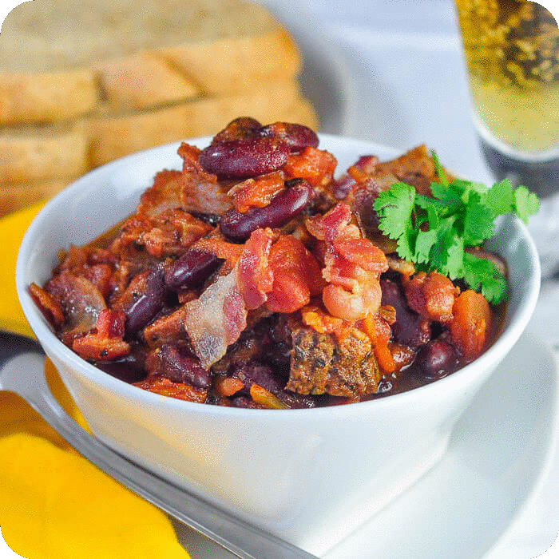
Reprogram your metabolism to burn fat for energy instead of sugars and carbs.
Don't worry, it's a lot easier than you think.
And I'll explain how in just a minute.
However, in order to do that, you need a lot of potassium.
If you ever go up a flight of stairs and your legs feel really heavy or you don't have the endurance...
That's a potassium deficiency.
Now, why it's really important for fat-burning is...
Potassium helps regulate fluid in the body.
Consuming more potassium helps thin lymph fluid so it can easily flow through the lymphatic tubes, which speeds up slimming.
It also helps reduce high blood pressure, protect against strokes, helps prevent osteoporosis, and may help prevent kidney stones.
Now, most people think of bananas when it comes to potassium, but...
Since they're high in sugar, you'll want to avoid them if you want a smaller waistline.
Instead, some great options are mushrooms and zucchini.
Missing Mineral #2: Magnesium
Magnesium is a co-factor.
That means it's a helper element that's involved in the activation of certain enzymes.
One of magnesium is most important job deals with the mitochondria.
Think of mitochondria as little energy bubbles in your cells.
Mitochondria produces energy and the spark plug that activates the enzyme to produce more energy is
Magnesium.
If you don't have enough magnesium in your body, you may suffer from:
**Low energy
**Fatigue
**Inability to relax
**Cramps and muscle spasms
**Constipation
**Insomnia
**Chronic back pain
Now, here's the kicker
The more extra weight you have on your body, the harder it is for you to absorb magnesium.
Which is why studies show that so many overweight adults are lacking in this powerful mineral.
It also helps speed up the removal of toxins to reverse a sluggish lymph and banish stubborn pounds.
Missing Mineral #3: Collagen
Collagen is the most abundant protein in our body.
It's what makes up our bones, muscles, tendons, connective tissues, and even our skin!
Without it, your metabolism slows down...
You get wrinkles...
And your muscles and joints become weaker.
Unfortunately, our body's collagen production naturally begins to slow down as we get older.
This leads to visible signs of aging...
Wrinkles...
Sagging skin...
And joint pains due to weaker cartilage.
Diets high in sugar also deplete collagen levels.
However, when you start adding more collagen to your diet...
It helps increase your fat-burning metabolism...
So you burn more calories and fat throughout the day...
It reduces cellulite and wrinkles...
It makes your skin look younger and more youthful...
And it "tightens up" loose and saggy skin...
Have you ever seen someone lose a lot of weight...
And their stomach has this "pooch" of leftover skin?
Collagen helps tighten that up...
Which is why...
If you haven't already...
It's extremely important to get more high-quality collagen into your diet.
I like to sprinkle some on top of my soups.
This Daily Ritual Melted 21lbs Off My Body In the First 21 Days
After my doctor dumped all this new information on me...
I was a bit overwhelmed.
I was on the verge of Type 2 diabetes...
At EXTREME risk for a heart attack before I reached 40...
And my lymph system was so backed up, my body was hanging on to over 30 pounds of dead weight.
Just as I was about to leave...
My doctor reached into his desk drawer and pulled out a thin booklet.
"This is what I give to my most stubborn patients, where the weight just wont' come off.
It's a soup diet.
It has all the minerals and nutrients we talked about.
And it's a way to get your body burning fat again without worrying about calories...
Because the liquid in the soup naturally fills up your stomach...
So there's less room for food.
And it'll get your lymph fluid flowing again...
So your body will start burning fat."
That night, I went over the soup detox my doctor gave me.
It seemed simple enough, I had all the ingredients already, and so...
I started making soup.
Every night for dinner I had a big bowl of soup and usually had enough leftover for lunch the next day.
However, there was just one problem...
The soups tasted absolutely AWFUL!
There was no salt
No flavor
And I had to plug my nose just to choke it down.
Desperate to make something happen
My wife, whoâs an amazing cook, started adding in these secret spices that made the soup POP
Suddenly, the soups tasted amazing, and since I could eat as much as I wanted
I felt like I was in heaven.
I couldn't believe it.
I had been dieting for over 10 years, I was always cutting calories and worried about eating too much...
Yet now, I was eating as much as I wanted and I felt great.
The next morning, I woke up and my stomach felt a little lighter.
I jumped on the scale and I was already down a pound after just one night.
Within 5 days, things really started to change.
I was down 9 pounds and my size 44 jeans were feeling loose around the waist.
I swear my stomach was shrinking.
Just a week later, I lost another 7 pounds and my energy levels were through the roof.
And it only got better.
After just 21 days, I had lost 21 pounds, 6 inches off my stomach, 3 inches off my waist, and 2 inches off my thighs.
And within a month, I looked like a completely different person.
But that wasn't the best part.
My clothes start fitting better from Day 1
I finally had the energy to go for walks with my wife and really connect with her
And I was no longer exhausted and worn out after another 50 hour work week
Over The Next 3 Months a MIRACLE Happened
By the end of the third month, I finally wore swim trunks in public for the first time...
Without a shirt covering my belly.
I was down about 50 pounds and my confidence was growing fast.
I looked and felt better than I did when I was 20
Even more important
I was no longer pre-diabetic and my high blood sugar has been gone for months.
Within the first year and a half, I lost a whopping 110 pounds.
Getting a clean bill of health from my doctor just a few months later was one of the most amazing moments in my life
My wife cried tears of joy knowing that I'd be around to grow old together.
And we got more serious about trying to have kids.
Since the weight was coming off so quickly...
People at work kept asking what I was doing.
And so, I started sharing this simple soup detox with anyone who asked.
Like Gabrielle...
She Lost 15 Pounds In Just 21 Days By Eating More Belly-Melting Soups
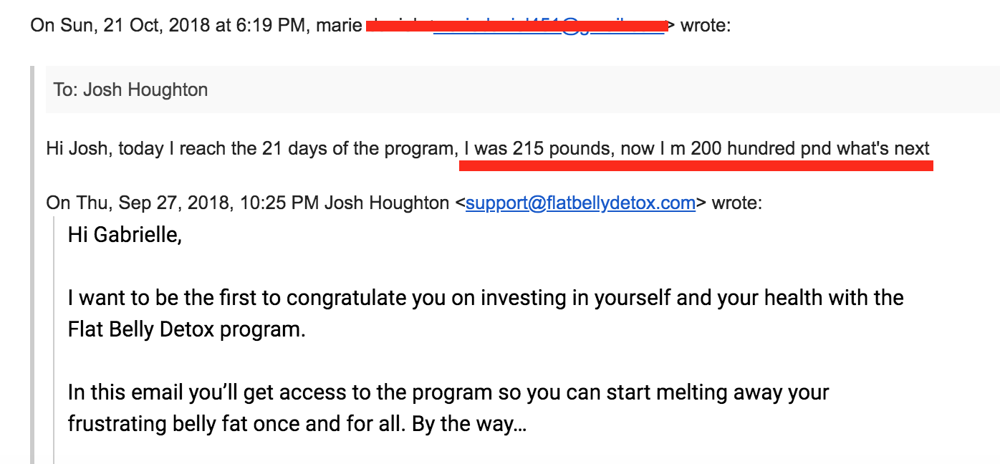
Andrew Lost 14.3 Pounds in 25 Days With Simple Slimming Soups
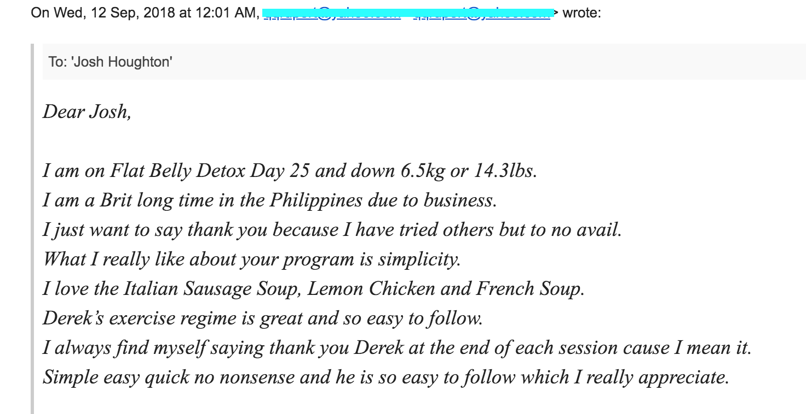
The Secret to Automatic Weight Loss
Once I saw how quickly this soup detox was working for my friends, family, and co-workers who tried it...
I realized that we were on to something BIG.
Look, if this worked for me
Someone who's been overweight my entire life
Traumatized by bullying, getting beat up because I was the "fat kid", while failing on every diet I tried
Then I know it can work for you too.
Just think about it
The only way I was finally able to lose weight was by doing the exact OPPOSITE of what everyone else is doing
I didn't eat a single salad...
I only ate broccoli when it was in my thick and creamy broccoli and cheddar soup...
I ate as much as I wanted...
And I never counted calories or tracked my food.
Once I saw how effective this soup diet was...
I realized I had to get it into the hands of as many people as possible.
So you can fight back against age-related weight gain.
That's Why I Organized All These Secrets Into an Easy to Use Done-For-You Protocol Called the 14-Day Rapid Soup Diet
The 14-Day Rapid Soup Diet is an all natural nutrition program that contains a done-for-you meal plan, delicious fat-burning soup recipes, and personal accountability to strip away unwanted fat in just 2 weeks.
In fact, most people see and feel a difference in their waistline in the first 48 hours.
I'm so excited to share these slimming soup secrets with more people just like you.
You see, after losing over 100 pounds myself, I made it my mission to help at least 100,000 struggling men and women lose at least 10 pounds...
And the only way to do that was to package up all my secrets into an easy to use follow along system.
This NEW and proven protocol is designed specifically for women and men who love to eat, hate dieting, and want a flatter stomach without killing yourself at the gym or going on another crash diet.
If this sounds like you, then the 14-Day Rapid Soup Diet is the answer you've been looking for.
Eating These Delicious Soups Will Melt Away More Fat Than 2 Hours on the Treadmill
When you start eating these super-healing soups, you can start burning fat in as little as 24 hours.
You'll start to have more energy so you can get more things done around the house...
You'll feel lighter...
Your jeans will start feeling a little loose around the waist...
And your skin will reclaim that youthful glow that only happens when you heal your body from the inside out.
Now, here's the real magic behind why these soups work so well for weight loss...
When you give your body the right mix of minerals, proteins, and healthy fats...
Your body takes it as a sign that it's ok to start burning fat for energy.
And so, little by little, your body will start burning up the fat around your stomach, your hips, your love handles, and your thighs..
...using it for energy to get you through your day.
Then, since your fat-burning hormones will be at an all time high, they'll start working overtime while you sleep.
You see, deep sleep is the most effective time for your body to burn fat...
And so, within the first couple of days, you're going to wake up feeling lighter and leaner than ever before.
The more soups you eat, the lighter you'll feel...
Until all the unwanted flab is off your body, revealing the new, sexy you.
No Other Solution Will Slim You Down Like These Simple Soups
I'm sorry if I'm making this sound too easy.
I just know how hard I struggled for years trying to get the weight off and all the complicated diet solutions and exhausting exercise programs never worked.
I tried working out 5 times a week and my knees got so sore I could barely into my car to drive to work in the morning.
I went on a vegetarian diet because plants are supposed to be so healthy, yet after 4 days I was pulling my hair out because I was so hungry...
...and eating salads with radishes and pumpkin seeds didn't sound fun to me.
I tried Paleo and quickly realized that eating all that meat only left me feeling bloated, heavy, and sluggish.
I tried the "all-fruit" diet and was eating around the clock yet I was always hungry and felt my body getting weaker after the first week.
I tried nothing but shakes and smoothies for a few weeks, but what are you supposed to do, bring your blender to work?
Plus, my wife wanted to eat real food instead of another kale apple smoothie.
I even tried a plant-based diet only to spend all day in the bathroom...
...let's just say my body didn't agree with all the raw plants.
Look, I know you've probably tried dozens of diets...
And you're extremely skeptical about anything when it comes to losing weight.
All I can say is this is the first thing that worked for me in over 10 years.
It's simple.
It's natural.
You eat real food...
You do NOT eat less...
Your body is happy...
Your mood improves...
And because burning fat is all about hormones, the weight quickly starts to come off.
Over 15,000 women and men have tried it since 2017 and the results speak for themselves. Like...
Michele Dropped 4 Sizes in 4 Weeks
(That's 1 Size DOWN Per Week)
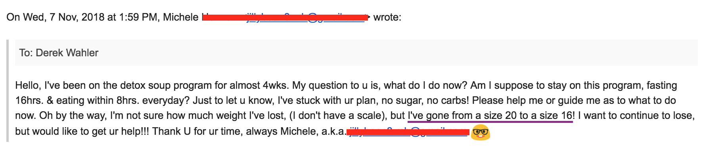
Sharon Lost 10 Pounds in the First 8 Days Using This Daily Soup Ritual
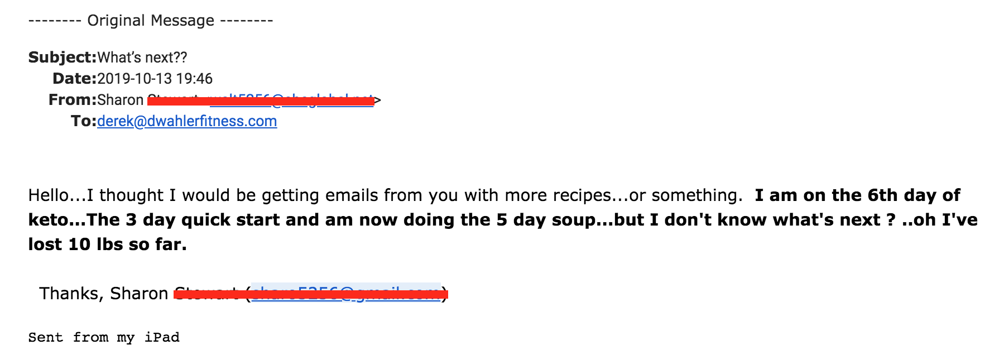
This Proven Slimming Soup Detox Works for Anyone, At Any Age, At Any Weight...Even If:
I'm Too Busy & Don't Have Time
As a busy husband who used to work at least 50 hours a week, I know that there simply aren't enough hours in the day.
That's why I designed this entire system to quickly melt the fat off without long, exhausting works, hours of meal prep, or dozens of complicated recipes.
As someone who hates to cook, I just wanted something fast that I could squeeze in during my hectic day.
This won't take any extra time out of your day...
The program is extremely simple to follow with only a few guidelines, so you'll never be confused.
And even better, most of the soup recipes can last for days, which only saves you time.
I'm Too Old & Nothing Ever Works For Me
After seeing so many women and men in their 60's and 70's thrive on this new way of eating...
I'm confident in saying that age is just a number.
You see, as you get older, certain hormones like estrogen and progesterone drop...
Along with testosterone in men.
Which means your body goes into more of a "storage mode".
When this happens, most try eating less, or they end up eating the wrong foods, which is the absolute worst thing you can do.
Eating less just slows down your metabolism even more because your body thinks it's starving.
Instead, when you eat the right combinations of minerals, healthy fats, and proteins at the right times throughout the day...
The weight starts coming off and your body burns fat for energy.
Meal timing is especially important as you get older, which why this program works so well.
I Can't Exercise and I'm Not Very Active
One of the biggest myths is that you need to exercise to lose weight.
You don't. The truth is...
You lose by eating foods that keep your insulin levels low.
Insulin is a storage hormone that gets released every time you eat.
However, the magic in these soups is that they keep your insulin levels lower than normal.
When that happens, your body naturally turns to your stored fat for energy.
Which means you start burning the extra fat around your belly, hips, and thighs for fuel throughout the day.
I've personally helped people lose over 30 pounds without exercising at all.
Don't get me wrong, exercise is great for heart health, building strong bones, and building up your lungs.
But for fat loss, it doesn't make much of a difference.
James Lost 19 Pounds in Just 11 Days
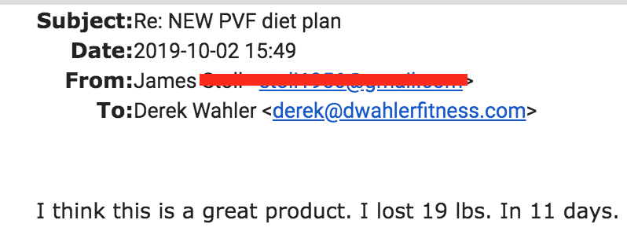
Marilyn Lost 11 Pounds Eating More Soup
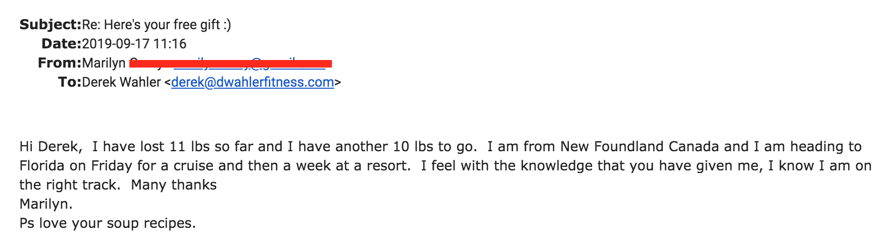
Here's What You Get Today When You Pick Up Your Copy of the 14-Day Rapid Soup Diet
Rapid Soup Diet System
The Rapid Soup Diet is an easy-to-follow 14-day protocol designed to melt away the most amount of fat possible without exercise.
Within this protocol, you'll know exactly what to do for breakfast, lunch, and dinner.
It's filled with fat-burning recipes, delicious soups, and mouth-watering meals that take the weight off without leaving you feeling hungry or deprived.
In fact, there are no limits. You can eat as much as you want.
Within the first few days, your body will shift into burning fat for energy and that's when you'll really notice a difference in the mirror.
This protocol is extremely easy to follow, it delivers results FAST (usually 3-11 pounds down in the first week), and it can only be found here on this website.
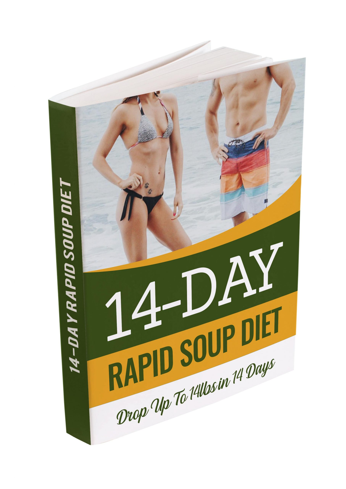
**NOTE: Images are for visualization purposes only. This is a digital product available for instant access **
Bonus #1 - Keto Soups Cookbook
The ketogenic diet is the most popular diet of 2020 and it's easy to see why.
All over the world, thousands of women and men in their 50's, 60's, 70's and beyond are losing weight like crazy.
That's because when you start burning your stored body fat for energy, the weight comes off extremely fast.
Now, when it comes to soups, most of them are filled with beans, rice and starchy veggies, which STOP fat-burning in the body.
That's why we put together 30 amazing keto soup recipes that you can use day after day to flatten your midsection while feeling full at the same time.
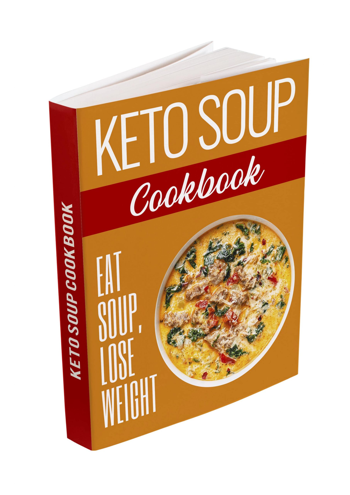
**NOTE: Images are for visualization purposes only. This is a digital product available for instant access **
Bonus #2 - Weekend Soup Detox
I'm a big fan of taking "baby steps" when it comes to burning fat, after all...
Completely overhauling your diet for weeks at a time is a recipe for disaster.
That's why I like to start with something short because I know the shorter it is, the more likely it is that you stick with it...
And when you stick with something even for just a few days, you'll see results, and...
You'll be much more likely to continue your healthy eating habits!
That's why I put together a brand NEW Weekend Soup Detox, that way...
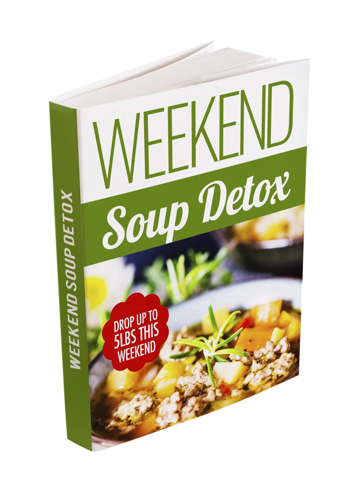
**NOTE: Images are for visualization purposes only. This is a digital product available for instant access **
All you have to do is commit to a few measly days of eating delicious foods and soups.
My personal clients have lost anywhere from 2-7 pounds on this delicious weekend plan, and...
It's the PERFECT way to get started, or...
You can bring it out on any weekend where you want to eat yummy soups and drop a few pounds while you're at it.
This is by FAR one of my most popular programs, and...
I'm including it for FREE when you pick up your copy of the 14-Day Rapid Soup Diet here today.
Bonus #3 - Immunity-Boosting Soup Cookbook
With everything going on these days, one of the most important things is your immunity.
Because the last thing you want to do is get sick.
Now, Step #1 when it comes to your immunity is eating healthier foods that still taste good to you.
After all, if you don't like what you're eating, you're not going to stick with it.
So I went ahead and put together an entire cookbook of immunity soups that will also help you lose weight.
Simply make one for lunch or dinner as often as you can and watch the pounds come off, while you feel better than ever.
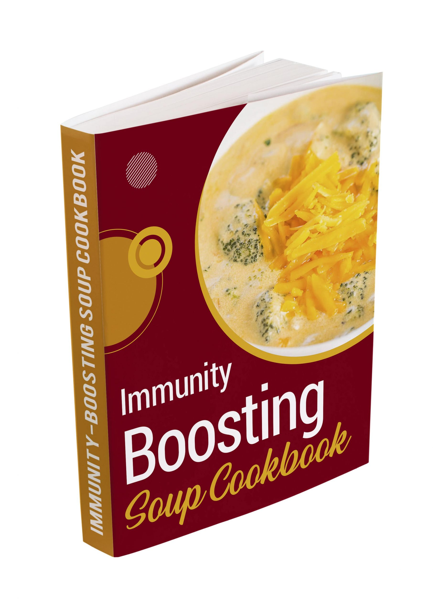
**NOTE: Images are for visualization purposes only. This is a digital product available for instant access **
Bonus #4 - Rapid Soup Diet Quick Start Guide
There's nothing worse than buying a new program only to have NO IDEA how to get started.
You're confused, you don't know where to start, and all your excitement quickly vanishes before you ever get started.
Unfortunately, that's all too common these days...
Which is why I created a specific and detailed Quick Start Guide...
So you know exactly what to do first...
How to get started...
What to buy at the grocery store...
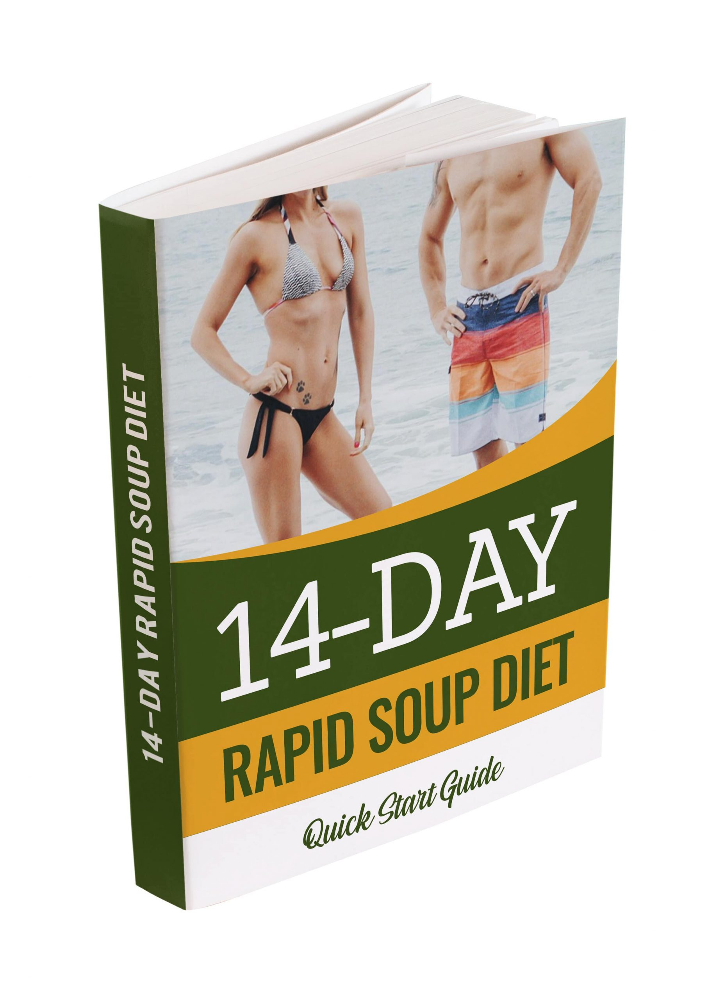
**NOTE: Images are for visualization purposes only. This is a digital product available for instant access **
And when the best time is to eat your meals (aka meal timing).
All of this is laid out for you in step-by-step detail.
And if you are confused or have questions, you can just shoot me an email and I'll answer them right away.
I'm here to help, I love hearing from those who trust in me enough to invest in one of my programs...
And I won't stop until you get the results you want.
Bonus #5Â - Keto Immunity Smoothie Recipes
I don't know about you, but I don't always have an hour or two to prep for a full meal...
Cook everything...
And then clean up afterwards.
It can be A LOT of work that's extremely exhausting.
That's why I included an entire recipe book of Keto Immunity Smoothies.
These "emergency smoothies" an be used as a meal replacement, or...
As a tasty guilt-free snack or dessert.
Each keto smoothie takes less than 5 minutes to make...
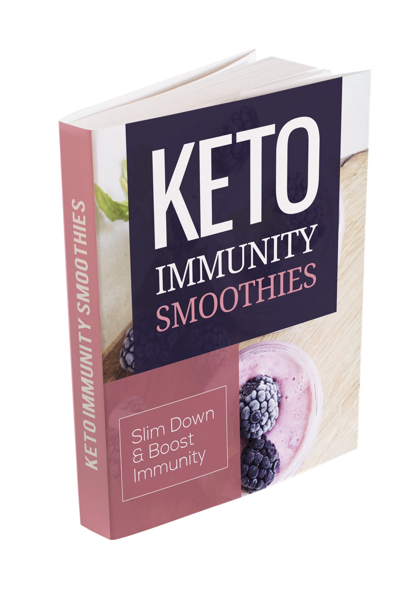
**NOTE: Images are for visualization purposes only. This is a digital product available for instant access **
And it doesn't include all the sugar and carbs that most smoothies do, which always end up adding inches to your waistline.
Instead, you can continue to slim down while enjoying thick, creamy keto smoothies as often as you'd like.
These 4 Bonuses Are Worth $147 But You Get Them FREE When You Pick Up This Rapid Soup Detox Today
I'll admit that I was a bit unsure of putting all these free bonuses into the 14-Day Rapid Soup Diet system, after all...
You can get amazing results with just the main program.
However, as a religious couple from the South, my wife reminded me...
"Do unto others as you would have them do to you".
Which is why I'm happy to give away all these bonuses absolutely free as my way of saying thank you for investing in your health today.
You Simply Can't Find These Slimming Soup Secrets Anywhere Else
What makes this system truly unique is that I'm a normal person just like you.
I wasn't skinny my whole life (far from it), I don't have a bunch of fancy medical degrees, and I actually know what it feels like to be overweight and the toll that takes emotionally.
That's why this program is so different than everything else.
Because I know what works for real people like you and me.
This program was designed by someone that GETS YOU - we're both busy, we both have a lot going on, and we both have struggled with traditional forms of "dieting."
I get that, heck I lived that for over 10 years.
That's why I promise I designed this program to get the extra weight off in a way that you've never tried before.
This Rapid Soup Detox is NOT For Everyone
I have to be honest with you...
Even though I'm regularly called a Pollyanna...
I know that I can't help everyone with this program.
That's because even this Rapid Soup Diet can work for anyone, it's definitely NOT for everyone.
For example, if you're looking for some magical drink you can have before bed to flush away 20 pounds of fat, then...
This isn't for you.
By now you have to know those "pipe dreams" don't really work, right?
And while this is a "quick fix" in that most drop a few pounds and start burning fat in the first 48 hours...
It's not magic.
You do have to follow the plan.
So if you want someone else to do everything for you, while you keep eating pizza and ice cream, then this program isn't for you.
This 14-day program is realistic and it's extremely easy to follow.
And it works 99% of the time when you follow the blueprint.
But if you can't follow a few simple guidelines, then it's best we both part ways now, so we don't waste each other's time.
This is ONLY for women and men who are ready to STOP wishing and hoping for a new body, and are ready to make it happen NOW.
I've made this as easy as it gets...
So if you're serious about getting the extra weight off while having the flat and firm belly you desire, then...
The 14-Day Rapid Soup Diet is the ONLY solution for you.
Marie Lost 15 Pounds in Just 21 Days
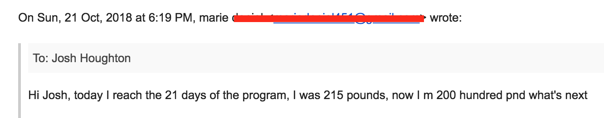
Don't Waste Thousands of Dollars on Gym Memberships, Personal Trainers, or Doctor Visits
You Can Get These Flat Belly Soup Secrets at a Fraction of the Cost
It took me over 10 years to get my own health back on track...
And when you think of the dozens of diet programs, pre-packaged meals, doctor bills, prescription medications, and visits with a therapist after getting bullied as a kid...
Well, it ended up costing a pretty penny.
That's not to mention all the gyms I joined (and never went to)...
The emotional stress that took a toll on my childhood and eventually my marriage...
Along with hiring personal trainers at over $100 per session to try and whip me into shape.
I easily spent over $5,000 trying to get the help I needed.
And so, I want you to learn from my mistakes without having to pay a huge price tag.
Initially, my publishers wanted me to charge $150 for this complete system...
And since that's less than two sessions with a personal trainer, I figured it was a fair price.
Especially since this will take the weight off MUCH faster without any of the exhaustive exercise.
Then my wife reminded me why I wanted to do this in the first place.
And that's to help people who struggled like I did.
That's why I decided to take $100 OFF the suggested price...
And another 60% off of that.
When you pick up your copy of the 14-Day Rapid Soup Diet today...
Along with all 5 bonuses...
You'll get it for a fraction of the normal price.
Try The Soup Detox Out On Me
Being over 300 pounds myself, I understand that it my be difficult for you to see yourself with the flat and firm belly you desire - just like it was for the thousands of women and men who were in the exact same stop you are...
And yet we made believers out of them.
You see, I know how fast and simple this system is, which is why almost anyone who gives it an honest try sees amazing, life-changing results.
That's why I'm willing to put all the risk on my now-slender shoulders because I know it will work for you.
Which is why you DON'T have to decide right now.
Take advantage of my unconditional "Triple Guarantee" and get results first, then decide.
Experience the entire 14-Day Rapid Soup Diet system for a full 60 days on me, and if you don't get the results you desire, you pay nothing!
Just let us know if you're not 100% satisfied and you'll get a full refund with no questions asked.
The Rapid Soup Diet "Triple Guarantee"
Guarantee #1: Anyone At ANY Age At ANY Weight Can Do This
I made sure anyone at any age and at any weight get can the extra pounds off with this easy-to-use system.
You don't have to "be in shape"...
You don't have to be "self-disciplined" with food...
And you don't need strong "willpower".
All those are automatically taken care of when you start eating these delicious soups.
Your need for willpower goes right out the window because you'll be LOVING the foods you're eating while the weight is finally coming off.
When that happens, you don't need willpower anymore.
Guarantee #2: Fast and Long-Lasting Results
While the belly-slimming results you'll see on this detox program will happen FAST...
...usually within the first 48 hours...
It's not just another "quick fix".
That means you'll finally be able to keep the weight off this time.
How?
Keeping the weight off is really just finding slimming foods you love, because when you enjoy your meals, the temptation to go back to your old way of eating disappears.
Think about it...
If you had dozens of recipes that you loved making, that taste absolutely delicious, and that melted the fat off like crazy...
Would you want to go back to the frozen pizza's, cheap potato chips, or sugar-filled sodas?
Of course not!
You just haven't found the right foods for you.
That's why when you start enjoying this delicious way of eating, you'll be so much LESS likely to fall back into old habits.
Plus, along the way, I'll be giving you all my secret tricks to keep the weight off, after all...
When I lost over 100 pounds, I've successfully kept it off for almost 5 years now.
Guarantee #3: The Absolute BEST Customer Service
When you join this Flat Belly family, you'll never be alone.
My team of coaches and I will always be by your side, ready to help you at a moment's notice.
If you have specific questions about the program, we'll be here to guide you...
If you're not getting the results you want, just let us know and we'll drop everything to help you...
If you're confused or frustrated, don't be a stranger. Reach out to us immediately because we've got your back.
You're part of the team now and we'll do everything in our power to make sure you succeed.
Flash Sale! Limited Copies of the 14-Day Rapid Soup Diet Available at This Special Price -- Hurry!
As I mentioned before, my dream is to have the 14-Day Rapid Soup Diet as a physical book sitting on bookshelves all across America...
Which is why my team and I are working night and day to make that dream a reality.
However, with that comes high shipping costs, expensive labor, and paying high premiums to the top book manufacturers in the world.
Which is a high price to pay.
That's why I'm having a fire sale on the digital version so you can get it at a fraction of the cost without having to wait another year while I work through all this red tape.
I want to help the action takers, the women and men who are ready to make a change NOW...
And want to try an out-of-the-box solution that works wonders as soon as you try it.
That's why I'm practically GIVING this system away for a measly $15.
It's first come and first serve...
I truly have no idea how long I can keep this discounted fire sale going, so please take advantage of it now, so you can still get the 14-Day Rapid Soup Diet at this ridiculously deep discount.
Seriously, $15 is the price of a couple burgers and fries at your local fast food joint...
Wouldn't you rather be out enjoying your slender new body instead of scarfing down more "food" that's robbing you of the energy and lifestyle you desire?
To activate your discount and get started today, simply click the button below.
Enter in your information into our 256-bit 100% secure order form..
And you'll receive instant access to the entire Flat Belly system, along with all 5 FREE bonuses.
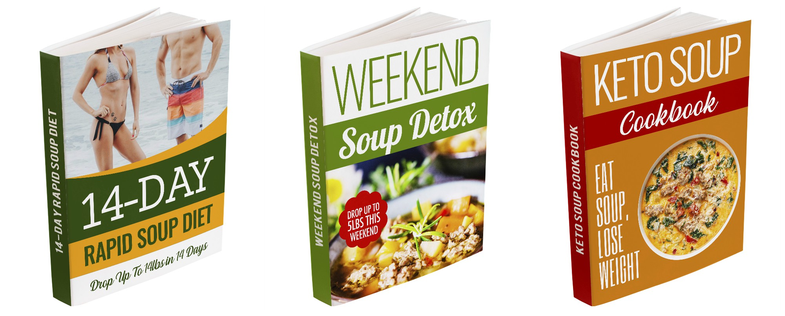
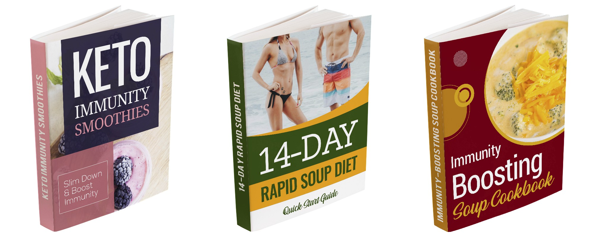
**NOTE: Images are for visualization purposes only. This is a digital product available for instant access **
$69 $15
Dr. Abida Lost 13.2 Pounds in Just 4 Weeks Eating More Soup
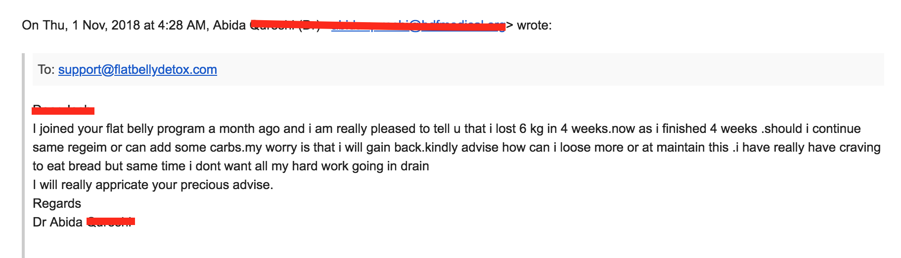
I'm Always Dieting & It Never Works, Why Would This Be Any Different?
I'm not a fan of the word "diet" because it implies eating low-calorie, suffering while you eat foods you don't enjoy, all in hopes of losing a few pounds...
...which you'll likely just put back on.
Instead, this is a way of eating that gives your more energy, reprograms your body to burn fat for energy, and greatly decreases your fat-storing hormones like insulin and cortisol...
Because of one unfair advantage...fat-burning soups.
Eating low-calorie or going on another fad diet does NOT give you more energy, in fact it robs you of your energy...
Eating low-calorie does NOT reprogram your body to burn more fat, instead you're just trying to "starve the fat off" by eating less, which never lasts...
And eating low-calorie does NOT lower your fat-storing hormones.
In fact, it only makes them worse while increasing your hunger.
Plus, my team and I do something that barely anyone does.
We help coach you along the way.
Which means, whenever you have a question, or maybe you plateau and the weight just isn't coming off...
Just send us an email and myself or one of my coaches will jump in to help you right away.
Do you think the guy who created p90x is answering emails from everyone who bought is program?
Or what about the head of Weight Watchers, are they answering every single question that comes across their desk?
Do you think Jillian Michaels is responding to people who aren't getting results from her DVD's?
Nope, they aren't.
And so you're left on your own to either figure it out yourself, or struggle until it gets to be too much and you end up quitting.
It's NOT your fault, it's just 100 times easier when you have someone guiding you along the way.
Everyone is different, that's why my team and I are here to help you 24 hours a day, 7 days a week.
We do get a lot of questions and feedback, so please just give us 24 hours to respond.
**NOTE: Images are for visualization purposes only. This is a digital product available for instant access **
$69 $15
Nothing Will Ever Change Unless You Try Something New
Look, I know we covered a lot of information today
However, right now, you're at a crossroads
And you only have 3 options.
Option #1 is you can close out of this free presentation and forget everything you learned here today
You can keep feeling frustrated and upset with your body
You can keep HOPING things will change.
And you can keep doing the same things over and over again that have lead you to where you are at right now with a body you're obviously unhappy with
However, if you've made it this far, then I know you want more.
Option #2 is you can take everything you learned here today and try to apply it yourself
You can spend weeks researching the ins and outs of insulin resistance and how it may be affecting you
And you can create your own instant energy recipe to kill your cravings, and burn more belly fat every single day
And you can figure out how to detox your body from all the toxins and bad belly bugs that EVERYONE has and yet very few know how to get rid of.
You can spend the next few months or even years figuring all of that out on your own
However, if that's your plan, wouldn't you have done it already?
Wouldn't you have figured this all out a long time ago?
The truth is, soon life will get in the way like it always does and you'll end up in the same spot a year from now, struggling with your weight and body image issues when it all could have been resolved if you simply took action today.
Or you can take the easy way out, simply apply all the hard work I've already done for you
And in just minutes a day you can start looking and feeling better than you ever imagined possible
After all, I've already done all the heavy lifting to figure this out on my own after years of bullying, being picked on, and ruthless ridicule from so many people in my life
All you have to do is a few simple tricks throughout the day that I've already PROVEN work
And you can start visibly SEEING a flatter belly that's more firm to the touch just days from now without much extra effort on your end.
So if you want to take the noble and easy way out, while possibly adding decades onto your life, so your kids and grandkids have even more time to spend with you making memories that last a lifetime
Then simply click the Add to Cart button below and I'll be there waiting on the inside, ready to personally help you.
I Don't Know How Long This $50 Discount Will Be Available
Be honest...
How many times have you said, "My diet starts Monday"...
And how many times have you actually followed through with that?
Don't wait until Monday...
Don't wait until next week...
Don't wait until the "time is right" because there is NEVER going to be the perfect time.
Our lives are always chaotic and if you're waiting for the perfect time when things start slowing down for you then you're never going to make the healthy changes you need to live a long life.
And while I'm happy to give you such a steep discount...
...because I know how powerful these slimming soups are...
I can't keep the discount up forever because just like you, I have a family to feed and I want to keep a roof over my head.
So, if you have any desire to lose the extra weight, to shock your friends the next time they see you, to make your family members' jaws DROP when they barely recognize you..
Then take advantage of your $50 off discount while you still can...
And grab your copy of this NEW soup detox that's different than anything else you've tried before.
Just click the button below to get it.
Thank you for taking the time to read my story.
I appreciate it more than you'll ever know.
To your new healthy and vibrant life,
-Josh
Here Are the Most Common Questions About the 14-Day Rapid Soup Diet System
Question: Am I too old for this to work?
Answer: Definitely not!
It has worked wonders for women and men in their 30's, 40's, 50's, all the way up to people in their late 70's and early 80's.
That's because the belly slimming movements are low impact and completely optional, so you don't even have to do them in the beginning to get great results.
And the simple 2-step detox will have you eating MORE of your favorite foods, while flushing away your fat with a miracle instant energy recipe
That works for ANYONE at ANY age in ANY type of physical condition to burn more fat while improving your health.
Question: Josh, I lost 7 pounds in the first 7 days. Is this normal?
Answer: Congratulations! The 14-Day Rapid Soup Diet is in sync with your natural fat-burning cycles and you should be proud of yourself.
On average, we see up to 5 pounds of weight loss in the first week, although we have seen as much as 9 pounds of fat lost.
However, it's so much more than that. It's how your clothes fit as the weight starts coming off, how you see yourself in the mirror as the fat starts melting away and your true body begins to show.
Everyone is different, yet at least up to 5 pounds of weight loss in the first week is about average.
Question: Do I need a bunch of equipment or a fridge full of diet food to get started?
Answer: Absolutely not. You do not need a single piece of equipment or any special diet food to get started. All you need is a positive attitude thatâs focused on getting the results you desire without letting anything stand in your way.
Question: What happens after I click the Add to Cart button?
Answer: Once you click the âAdd to Cartâ button below, youâll be taken to our 100% secure order form page.
Once you enter in your information, you'll receive instant and immediate access to the entire 14-Day Rapid Soup Diet program, along with the follow along videos and bonus reports.
You can download all the manuals and videos straight to your computer, tablet, or phone so you can use them as often as you like.
This is a one-time only investment in yourself and you will never be billed again.
Question: How does your money back guarantee work?
Answer: These flat belly secrets have saved peopleâs lives, rescued marriages, and even freed people from their expensive medications and hospital visits.
Which is why I wanted to make it as easy as possible for you to try it out. So I took all the risk so you can test it out on me.
If you go through the program and realize that it's just not for you, send me an email and I'll be happy to provide you with a full refund with no questions asked.
Question: Josh, I'm ready to make a change. What is the next step?
Answer: Iâm so excited and I canât wait to help you breakthrough and transform your body starting today.
The first step is to click the Add to Cart button below, enter in your information in our 100% secure order form, and you'll receive instant access to the entire 14-Day Rapid Soup Diet program.
Plus a Quick Start Guide that will tell you exactly how to get started toward your new slim and sexy body starting right now without any confusion
And with our 60-day 100% money back guarantee, you have nothing to lose and an exciting, youthful life to gain.
References:
1. "Why Getting Rid of Belly Fat May Lower Type 2 Diabetes Risk" http://www.health.com/health/condition-article/0,,20188164,00.html
2. NIH study shows how insulin stimulates fat cells to take in glucose https://www.nih.gov/news-events/news-releases/nih-study-shows-how-insulin-stimulates-fat-cells-take-glucose
3. Insulin and insulin resistance http://www.healingdaily.com/detoxification-diet/insulin.htm
4. Though obesity, type 2 diabetes , heart disease or any other disease ARE physical illnesses - they ALL have a spiritual side http://www.sciencedirect.com/science/article/pii/S1499404606601231
5. "Stress hormone in the body causes you to put on more weight, makes you insulin resistant and can even destroy your metabolic health.
6. Comfort food ingestion that produces abdominal obesity http://www.pnas.org/content/100/20/11696.short
7. Detox diets for toxin elimination and weight management: a critical review of the evidence. https://www.ncbi.nlm.nih.gov/pubmed/25522674
8. http://www.scientificprotocol.net/insulin-resistance/
9. https://scientificprotocol.net/type-2-diabetes/general-type-2/diabetes-and-mealtime-insulin/what-is-insulin.html
ClickBank is the retailer of products on this site. CLICKBANK® is a registered trademark of Click Sales Inc., a Delaware corporation located at 1444 S. Entertainment Ave., Suite 410 Boise, ID 83709, USA and used by permission. ClickBank's role as retailer does not constitute an endorsement, approval or review of these products or any claim, statement or opinion used in promotion of these products.
Individual Results can vary person to person and testimonials in this presentation are not claimed to represent standard or typical results. All testimonials shown are real life people and may not reflect the average buyer's experience, and are not intended to represent or guarantee that everyone who buys will experience the same or similar results to those shown in the testimonials. The experiences shown in the sales video and sales letter from other people may not reflect the typical users' experience because everyone is unique. Due to recent statements from the FTC, it is required that we identify what a typical result is. The truth is most people never take action with the products they purchase online, so most of the time the typical results for losing weight weight loss is zero. The ability to follow through with the program plays a big factor. As the saying goes, you get what you put into it.The results that are shown in video presentation and sales letter are meant to show you what the most motivated 14-Day Rapid Soup Diet users have experienced. The truth is that most men and women who strictly follow the program may lose 1 to 1.5 pounds a week. Also, as with all things you should take the time to do your own research and
The contents of this site are for informational purposes only, and are not intended to be a substitute for professional medical advice, diagnosis, or treatment. Always seek the advice of your physician or other qualified health provider regarding a medical condition, suspected medical condition, and before starting any diet, exercise or supplementation program, or before taking or stopping any medication. Reliance on any information provided by this site and others appearing on the site is solely at your own risk. The site and its contents are provided on an "as is" basis.
2020 & Beyond, scientificprotocol.net All Rights Reserved.
Privacy Terms & Conditions